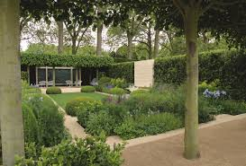
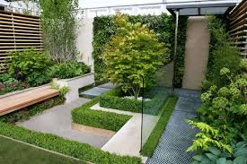
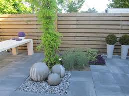
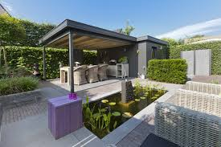
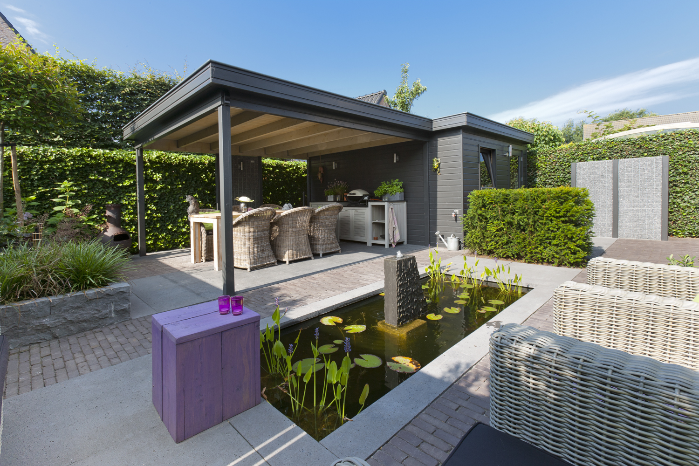
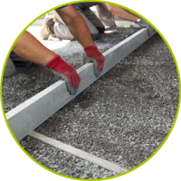
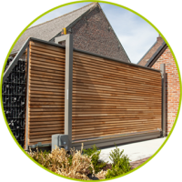
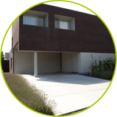
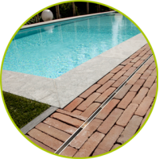

Jardin De Bauté
News
About us
Services
Contact us
    
❮
❯

Aanleg

Automatische poorten

Groot formaat tegels

Zwembaden
Gespecialiseerd in het plaatsen van grootformaat tegels en keermuren Maken van inritten, terrassen enz in diverse soorten materialen zoals kleiklinkers, natuursteen, grindsoorten en natuurlijk eurodallen.